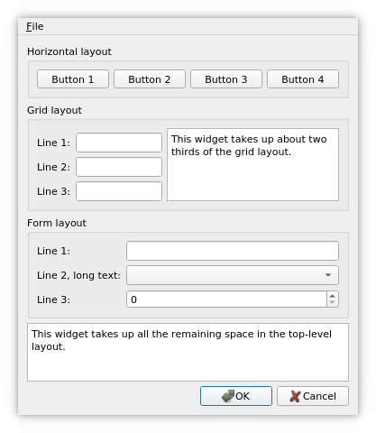

Layout Examples

Qt uses a layout-based approach to widget management. Widgets are arranged in the optimal positions in windows based on simple layout rules, leading to a consistent look and feel. Custom layouts provide more control over the positions and sizes of child widgets.
These Qt Examples demonstrate various ways of setting widgets in layouts.
See also Layout Management.